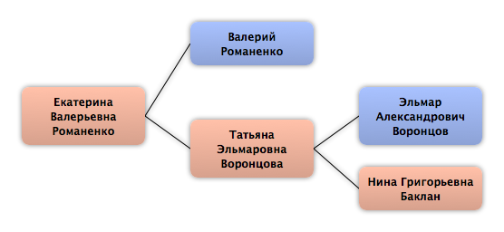

Домой
Домой
 Семьи
Семьи
 Источники
Источники
 Диаграммы
Диаграммы
 Статистика
Статистика
Екатерина Валерьевна Романенко

Контекст

Родители
| Отец | Дата рождения | Мать | Дата рождения |
|---|---|---|---|
 Валерий Романенко Валерий Романенко
|
Татьяна Эльмаровна Воронцова
|
Родители и дети
| Партнёры | Дата рождения | Дети |
|---|
События
Факты
Медиа
Примечание
Источники
Родство
| Имя | Степень родства | Дата рождения | Место рождения | Дата смерти | Место смерти |
|---|---|---|---|---|---|
| Родителей | |||||
| Отец | |||||
| Мать | |||||
| Дедушки и бабушки | |||||
| Бабушка | |||||
| Дедушка | |||||
| Прадедушка и прабабушка | |||||
| Прадедушка | |||||
| Прабабушка | |||||
| Пра-прадедушка и пра-прабабушка | |||||
| Пра-прадедушка | |||||
| Пра-прабабушка | |||||
| Пра-пра-прадедушка и пра-пра-прабабушка | |||||
| Пра-пра-прадедушка | |||||
| Пра-пра-прабабушка | |||||
| Двоюродные прадедушки и двоюродные прабабушки | |||||
| Двоюродная прабабушка | 1901 | 1940 | |||
| Двоюродные пра-прадедушки и двоюродные пра-прабабушки | |||||
| Двоюродная пра-прабабушка | 1942 | ||||
| Двоюродная пра-прабабушка | |||||
| Дальние родственники | |||||
| Пятиюродная сестра | 27.01.1979 | Санкт-Петербург, СССР | |||
| Пятиюродная сестра | 1983 | Ленинград, СССР | |||
| Пятиюродная сестра | 23.05.1987 | Санкт-Петербург, СССР | |||
| Пятиюродный брат | 1988 | Ленинград, СССР | |||
| Четвероюродный брат | 01.09.1988 | Ленинград, СССР | |||
| Четвероюродный брат | 19.11.1991 | Санкт-Петербург, Россия | |||
| Четвероюродный брат | 15.07.1995 | Санкт-Петербург, Россия | |||
| Другие родственники | |||||
| Четвероюродный дедушка | |||||
| Четвероюродный дедушка | |||||
| Четвероюродный дедушка | |||||
| Троюродная прабабушка | |||||
| Троюродная прабабушка | 20.01.1901 | ||||
| Троюродная бабушка | 01.02.1926 | Ленинград, СССР | 06.10.1997 | Санкт-Петербург, Россия | |
| Четвероюродная тётя | 1.02.1953 | ||||
| Четвероюродный дядя | 10.10.1959 | Ленинград, СССР | |||
| Троюродная тётя | 19.03.1963 | Ленинград, СССР | |||
| Троюродный дядя | 22.02.1965 | Ленинград, СССР | |||